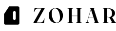
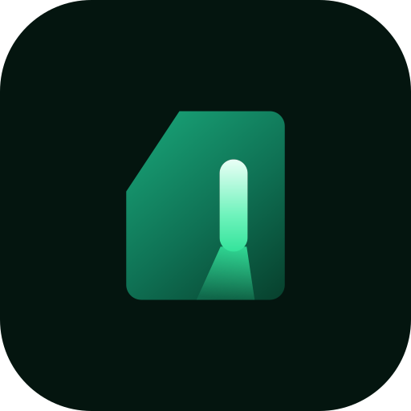
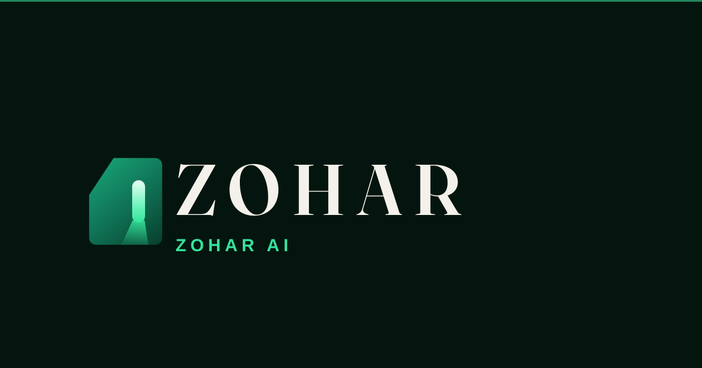

Threshold — production master
The selected construction, refined. The off-centre opening, the light from within and the crossing from intent to presence are preserved. The arch is gone.
What changed
Outer mass
The symmetric rounded arch is replaced by a chamfered monolith: one steep, non-45° chamfer on the leading top corner, 1.5-unit radii elsewhere. It reads as machined, not as a doorway or a headstone — and the steep angle stops it reading as a folded page corner.
The opening
Now a capsule incision that floats inside the mass and does not reach the base. A slot that never touches the ground cannot be a door. It is narrower and fully radiused at both ends — a controlled cut, not an entrance.
The light
One clean tapered shaft from the lower end of the incision to the base, replacing the soft pooled spill. It is dropped entirely below 20px, where the favicon variant uses a slightly larger incision instead.
Monochrome
Mass plus knockout only — no beam, no gradient, no opacity tricks. The chamfer and the off-centre slot carry the identity on silhouette alone.
Small sizes
A dedicated favicon construction widens the incision from 2.8 to 3.2 units and lengthens it, so the light still reads at 16px where the production slot would close up.
Wordmark
ZOHAR is shipped as outlined vector paths drawn from Fraunces at optical size 96, weight 600. No font needs to be installed, and nothing falls back.
True-size favicon tests
Rendered at exactly 16×16 and 32×32, with a 6× pixel-doubled enlargement beside each so the actual rasterisation can be judged.
Production asset set
Every file below is a real, self-contained SVG committed to the branch. Click a filename to open it.

{kind=link}
{kind=link}
{kind=link}
{kind=link}

{kind=link}
{kind=link}
{kind=link}

{kind=link}

{kind=link}
{kind=link}
prefers-reduced-motion nothing runs and the resting state above is what renders — it is the same file.
Naming. ZOHAR is the visible brand on the mark and in the lockup. ZOHAR AI is the company and schema name, carried by the secondary lockup only.
← Back to the homepage concept